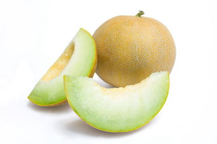

Melons (muskmelon incl. honeydew, canteloupe, sweetmelon) (Cucumis melo)

Mating & Breeding System: Cucumis melo contains several commonly cultivated varieties that can each be fertilized by their own pollen, that of another individual, and also pollen from other varieties. Flowers of both sexes are typically open for only a single day, with fertility of the plant being greatest in the morning and declining as the day progresses. Some varieties may have separate male and female flowers, others may have male and female parts in the same flowers (hermaphrodite, or 'perfect' flowers), while still others may have hermaphrodite flowers together with separate male or female flowers on the same vine. On an individual plant, male flowers tend to be more abundant, mature earlier, and produce nectar with higher sugar concentrations than female flowers. Insects, including honey bees, are required to move pollen from flower to flower. Foraging bees typically collect pollen in the morning and will switch to nectar in the afternoon, working both flower genders and delivering the large, sticky pollen grains in the process.
Pollination, Quality & Yield: Varieties of Cucumis melo typically require a minimum of 400 fertilized ovules per melon to produce a marketable fruit, and could have up to 600 or more. Insect pollination is essential for these crops, and can increase yield per hectare and improve the size, quality, and marketability of the fruit.
Pollination Recommendations: 2.5 strong colonies of honey bees per hectare are recommended for large fields. In small fields, or in large fields managed with them in mind, the native squash bee Peponapis pruinosa is an effective pollinator. This ground-nesting bee can reach very high densities at the field margins and within the field itself, and is active early in the morning when the pollen is most fertile. Care must be taken to avoid damage to nests of P. pruinosa and other ground-nesting wild bees that may be caused by deep tillage.
References
Bodnar, J. 1987. Pollination of vine crops. OMAFRA FactSheet 87-043.
Cane, J.H., Sampson, B.J., & Miller, S.A. 2011. Pollination value of male bees: the specialist bee Peponapis pruinosa (Apidae) at summer squash (Cucurbita pepo). Environmental Entomology 40:614-620.
Delaplane, K.S. & Mayer, D.F. 2000. Crop Pollination by Bees. CABI Publishing, New York.
Free, J.B. 1993. Insect Pollination of Crops, 2nd edition. Academic Press.
Julier, H.E. & Roulston, T.H. 2009. Wild bee abundance and pollination service in cultivated pumpkins: farm management, nesting behavior and landscape effects. Journal of Economic Entomology 102:563-573.
Kevan, P.G. 1988. Pollination, crops and bees. OMAFRA publication 72.
Mann, L.K. 1953. Honey bee activity in relation to pollination and fruit set in the cantaloupe (Cucumis melo). American Journal of Botany 40:545-553.
Nerson, H. 2009. Effects of pollen-load on fruit yield, seed production and germination in melons, cucumbers and squash. Journal of Horticultural Science and Biotechnology 84:560-566.
Sampson, B.J., Knight, P.R., Cane, J.H., & Spiers, J.M. 2007. Foraging behavior, pollinator effectiveness, and management potential of the new world squash bees Peponapis pruinosa and Xenoglossa strentia (Apidae: Eucerini). HortScience 42:459.
Shuler, R.E., Roulston, T.H., & Farris, G.E. 2005. Farming practices influence wild pollinator populations on squash and pumpkin. Journal of Economic Entomology 98:790-795.
Tepedino, V. J. 1981. The pollination effciency of the squash bee (Peponapis pruinosa) and the honey bee (Apis mellifera) on summer squash (Cucurbita pepo). Journal of the Kansas Entomological Society 54:359-377.
Willis, D.S. & Kevan, P.G. 1995. Foraging dynamics of Peponapis pruinosa (Hymenoptera: Anthophoridae) on pumpkin (Cucurbita pepo) in southern Ontario. The Canadian Entomologist 127:167-175.